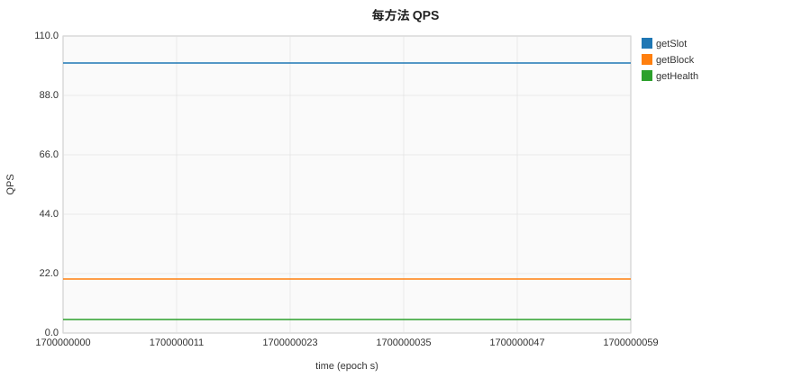
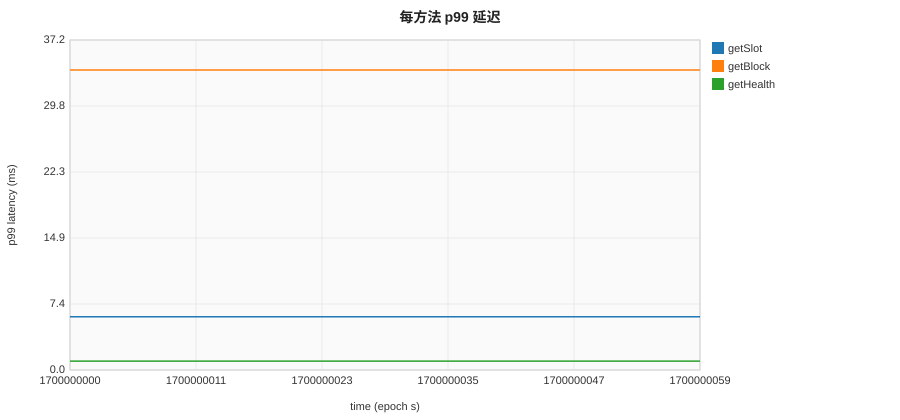
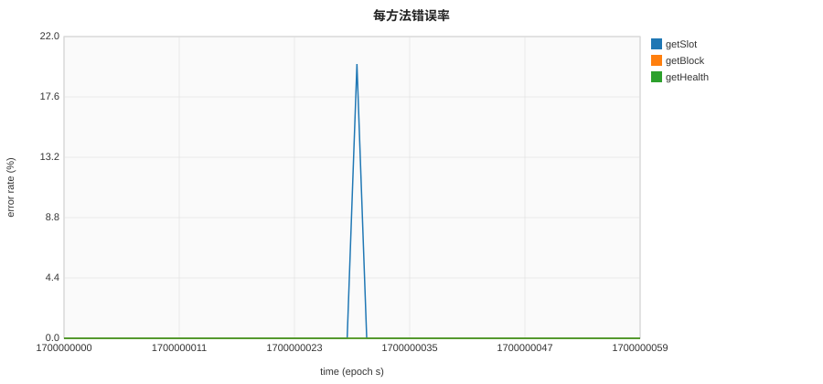
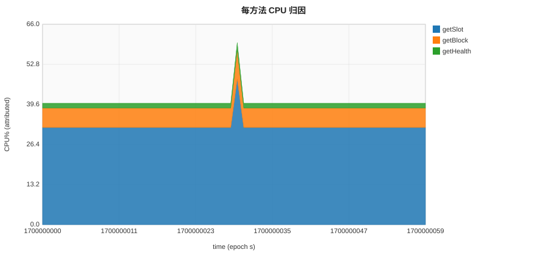

Generated with fixture data — solana mocked, 60s window, 3 methods, error spike @ t=30.
Resource and latency metrics attributed per RPC method, based on proxy-level extraction. Top 10 methods by total QPS shown. Methods not matched by DSL extractors are excluded.
| Method | Total Requests | Avg p99 (ms) | Max p99 (ms) | Errors | Error Rate | CPU% Share (peak) |
|---|---|---|---|---|---|---|
| getSlot | 6,000 | 6.00 | 6.00 | 20 | 0.33% | 80.0% |
| getBlock | 1,200 | 33.81 | 33.81 | 0 | 0.00% | 16.0% |
| getHealth | 300 | 1.00 | 1.00 | 0 | 0.00% | 4.0% |
Requests per second per method over the benchmark window. Useful for spotting method-level traffic spikes and skew.

p99 latency per method per second. Identifies which methods drive tail latency and when degradation begins.

Per-second error rate (status >= 400) per method. Localizes failures to specific RPC calls during the run.

CPU% attributed to each method per second using weight = method_count / total_count. Stacked area shows method-level resource contribution.
